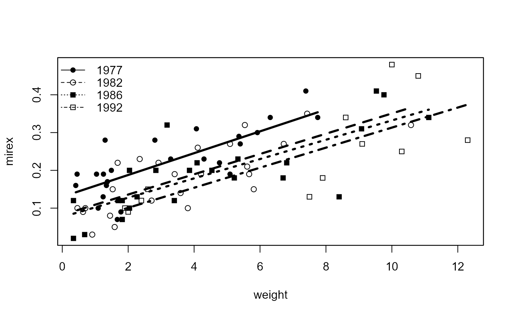

R/comparisonsDVR.R
compIntercepts.RdTests for significant differences among all pairs of intercepts in a dummy variable regression where the dummy variables all stem from one factor.
compIntercepts( mdl, common.cov = mean(x), conf.level = 0.95, digits = getOption("digits"), ... ) # S3 method for compIntercepts print(x, ...)
| mdl | A |
|---|---|
| common.cov | A value to be used as the common value of the covariate in the adjustment process. See details. |
| conf.level | A single number that represents the level of confidence to use for constructing confidence intervals. |
| digits | A numeric that controls the number of digits to print. |
| ... | Other arguments to be passed to the |
| x | A |
A list with the following four components:
comparison | The comparison results as returned from TukeyHSD. |
common.cov | The value of the common covariate sent in common.cov. |
adjvals | A vector of values of the response variable adjusted to the common.cov value of the covariate. This vector can be appended to the original data frame to construct summary statistics for the adjusted values (e.g., mean adjusted value for each group). |
means | A vector of mean adjusted values at the value of the common covariate. |
digits | The value sent in digits. |
rnm | The name of the response (LHS) variable. |
cnm | The name of the covariate variable. |
The print function prints the comparison and adjusted means in a nice format.
In a dummy variable regression without the interaction(s) between the covariate (x) and the dummy variable(s) (i.e., parallel lines) the coefficient for the dummy variables tests for a difference in intercepts between the level of the dummy variable and the reference level. Thus, all dummy variables from a particular linear model fit only compare intercepts with the reference level. Other intercept comparisons may be found by changing the reference level, which requires refitting the model.
Alternatively, Tukey's HSD method of multiple comparisons may be used, but this requires adjusting the original observations as if the original observations were all collected at the exact same value of the covariate (x). Because of this required adjustment, the TukeyHSD function is inappropriate for testing for difference in intercepts in a dummy variable regression.
This function provides a statistical comparison of all pairs of intercepts by first adjusting the observed data to a common value of the covariate (common.cov), computing a one-way ANOVA to determine if the mean adjusted values differ by level of the group factor in the original dummy variable regression, and then submitting the one-way ANOVA results to the TukeyHSD function to determine for which levels the mean adjusted values differ. The levels for which the mean adjusted values differ are also the levels for which the intercepts differ.
The default is to compute the adjusted values at the mean value of the covariate (i.e., common.cov=mean(x). However, if interest is in the intercepts (i.e., at X=0) then common.cov=0 should be used instead.
TukeyHSD and compSlopes from FSA.
Derek H. Ogle, derek@derekogle.com
## Reduce Mirex data to years where slopes don't differ to illustrate this ## function ... see compSlopes() for analysis of full data set. Mirex <- Mirex[Mirex$year!="1996" & Mirex$year!="1999",] Mirex$year <- factor(Mirex$year) ## Fit DVR, see that slopes don't differ, ## compare intercepts, visualize results lm1 <- lm(mirex~weight*year,data=Mirex) anova(lm1)#> Analysis of Variance Table #> #> Response: mirex #> Df Sum Sq Mean Sq F value Pr(>F) #> weight 1 0.43886 0.43886 103.7272 7.431e-16 *** #> year 3 0.07602 0.02534 5.9895 0.001016 ** #> weight:year 3 0.00089 0.00030 0.0704 0.975568 #> Residuals 76 0.32155 0.00423 #> --- #> Signif. codes: 0 '***' 0.001 '**' 0.01 '*' 0.05 '.' 0.1 ' ' 1compIntercepts(lm1)#> Warning: Removed an interaction term from 'mdl' (i.e., assumed #> parallel lines) to test intercepts.#>#> comparison diff 95% LCI 95% UCI p.adj #> 1 1982-1977 -0.05416588 -0.10225344 -0.006078329 0.0209412606 #> 2 1986-1977 -0.06545122 -0.11353877 -0.017363664 0.0033259143 #> 3 1992-1977 -0.09021635 -0.14911133 -0.031321360 0.0007448995 #> 4 1986-1982 -0.01128533 -0.05937289 0.036802220 0.9267699991 #> 5 1992-1982 -0.03605046 -0.09494545 0.022844523 0.3810617955 #> 6 1992-1986 -0.02476513 -0.08366011 0.034129857 0.6885397505#> #>#> 1977 1982 1986 1992 #> 0.2506358 0.1964699 0.1851846 0.1604194## Fit model without interaction to avoid warning, but ## note that the compIntercepts() results are the same lm2 <- lm(mirex~weight+year,data=Mirex) compIntercepts(lm2)#>#> comparison diff 95% LCI 95% UCI p.adj #> 1 1982-1977 -0.05416588 -0.10225344 -0.006078329 0.0209412606 #> 2 1986-1977 -0.06545122 -0.11353877 -0.017363664 0.0033259143 #> 3 1992-1977 -0.09021635 -0.14911133 -0.031321360 0.0007448995 #> 4 1986-1982 -0.01128533 -0.05937289 0.036802220 0.9267699991 #> 5 1992-1982 -0.03605046 -0.09494545 0.022844523 0.3810617955 #> 6 1992-1986 -0.02476513 -0.08366011 0.034129857 0.6885397505#> #>#> 1977 1982 1986 1992 #> 0.2506358 0.1964699 0.1851846 0.1604194